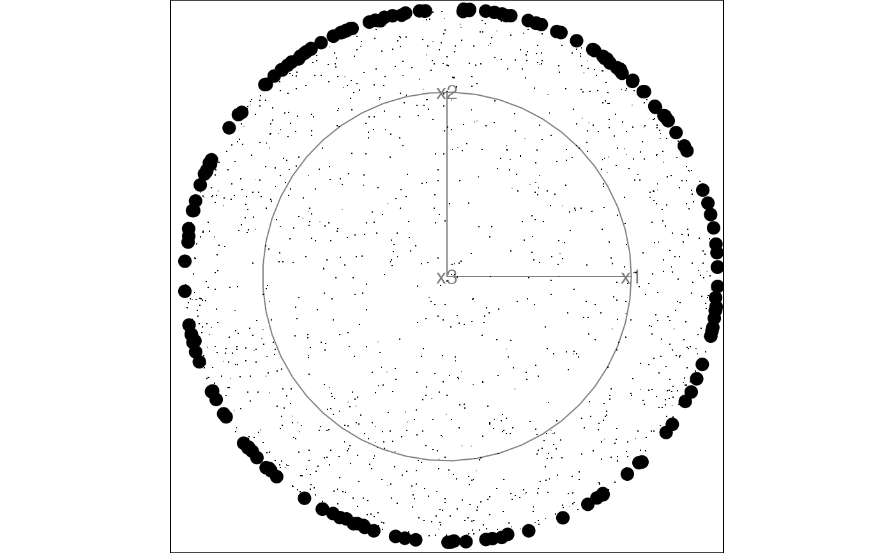
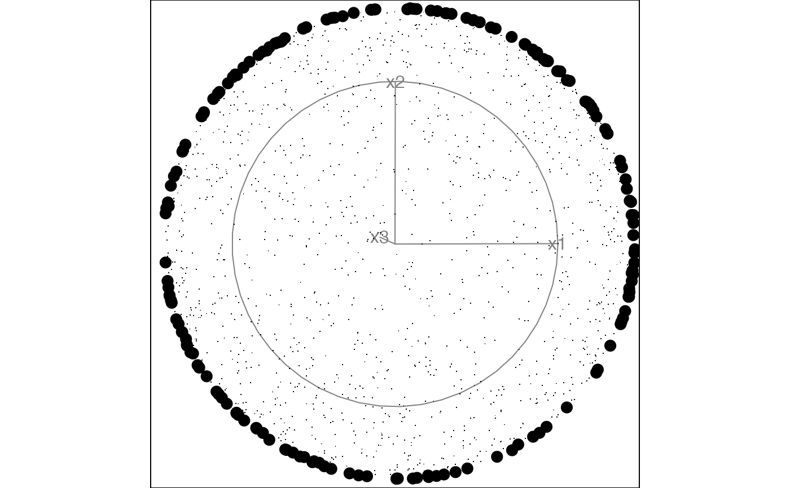
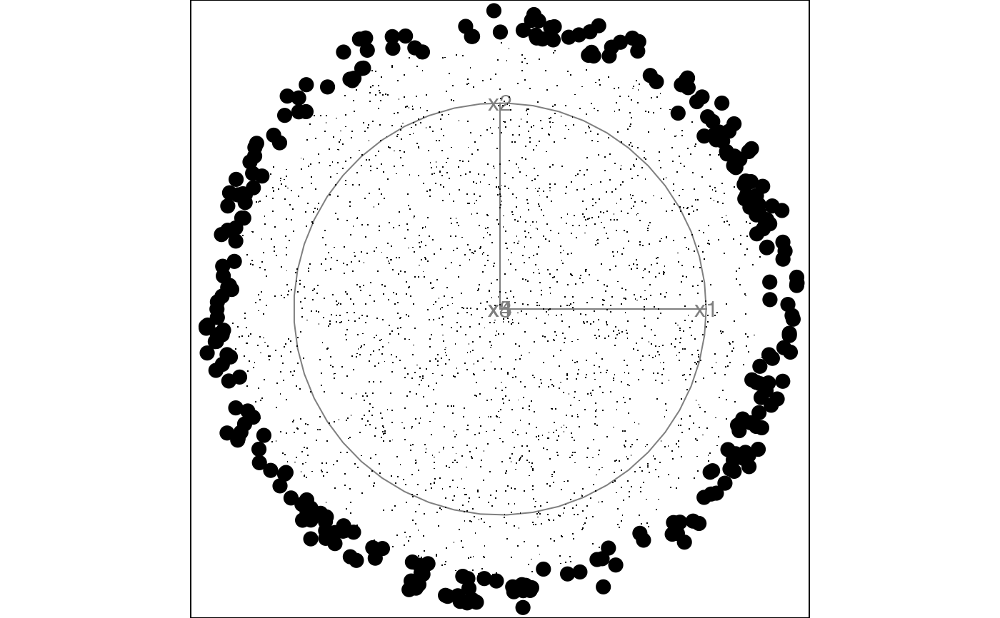
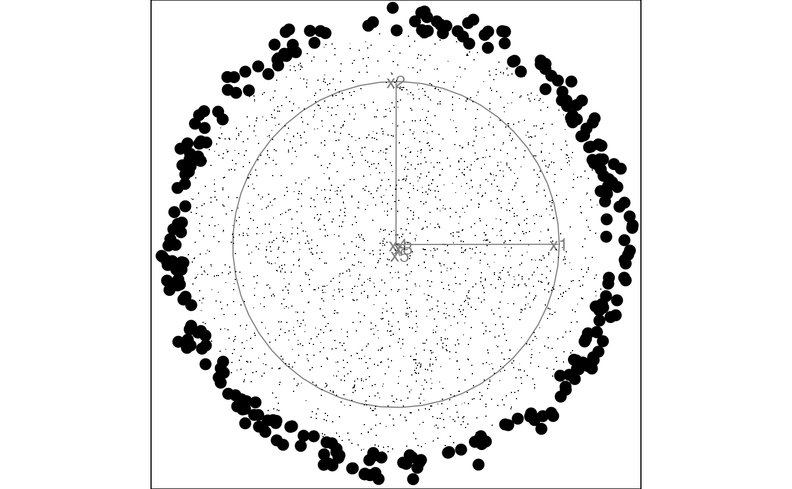
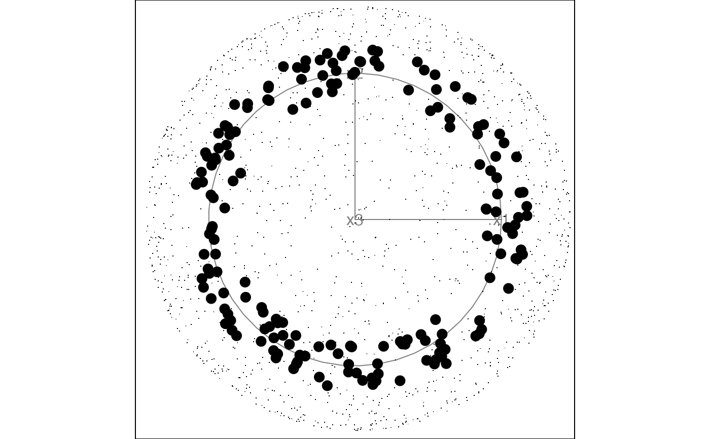
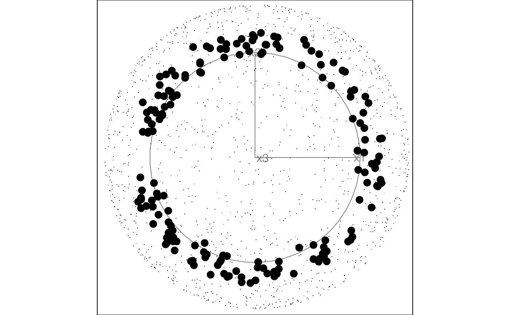
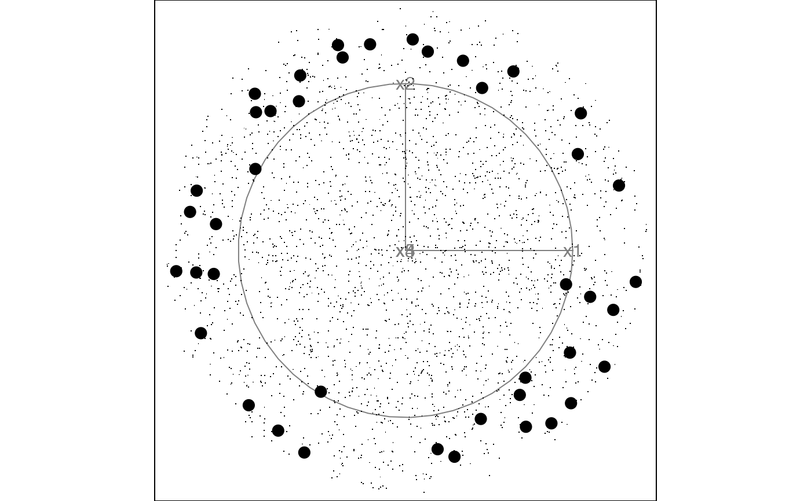
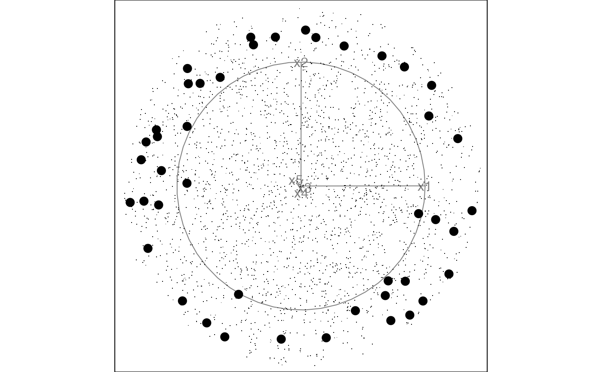

Animate a 2D tour path with a sliced scatterplot.
Usage
display_slice(
center = TRUE,
axes = "center",
half_range = NULL,
col = "black",
pch_slice = 20,
pch_other = 46,
cex_slice = 2,
cex_other = 1,
v_rel = NULL,
anchor = NULL,
anchor_nav = "off",
edges = NULL,
edges.col = "black",
palette = "Zissou 1",
axislablong = FALSE,
...
)
animate_slice(data, tour_path = grand_tour(), rescale = FALSE, ...)Arguments
- center
if TRUE, centers projected data to (0,0). This pins the center of data cloud and make it easier to focus on the changing shape rather than position.
- axes
position of the axes: center, bottomleft or off
- half_range
half range to use when calculating limits of projected. If not set, defaults to maximum distance from origin to each row of data.
- col
color to use for points, can be a vector or hexcolors or a factor. Defaults to "black".
- pch_slice
marker for plotting points inside the slice. Defaults to 20.
- pch_other
marker for plotting points outside the slice. Defaults to 46.
- cex_slice
size of the points inside the slice. Defaults to 2.
- cex_other
size if the points outside the slice. Defaults to 1.
- v_rel
relative volume of the slice. If not set, suggested value is calculated and printed to the screen.
- anchor
A vector specifying the reference point to anchor the slice. If NULL (default) the slice will be anchored at the data center.
position of the anchor: center, topright or off
- edges
A two column integer matrix giving indices of ends of lines.
- edges.col
colour of edges to be plotted, Defaults to "black.
- palette
name of color palette for point colour, used by
hcl.colors, default "Zissou 1"- axislablong
text labels only for the long axes in a projection, default FALSE
- ...
other arguments passed on to
animateanddisplay_slice- data
matrix, or data frame containing numeric columns
- tour_path
tour path generator, defaults to 2d grand tour
- rescale
Default FALSE. If TRUE, rescale all variables to range [0,1].
Examples
# Generate samples on a 3d and 5d hollow sphere using the geozoo package
sphere3 <- geozoo::sphere.hollow(3)$points
sphere5 <- geozoo::sphere.hollow(5)$points
# Columns need to be named before launching the tour
colnames(sphere3) <- c("x1", "x2", "x3")
colnames(sphere5) <- c("x1", "x2", "x3", "x4", "x5")
# Animate with the slice display using the default parameters
animate_slice(sphere3)
#> Using half_range 1
#> Using v_rel=0.1, corresponding to a cutoff h=0.1


animate_slice(sphere5)
#> Using half_range 1
#> Using v_rel=0.11, corresponding to a cutoff h=0.47


# Animate with off-center anchoring
anchor3 <- matrix(rep(0.7, 3), ncol=3)
anchor5 <- matrix(rep(0.3, 5), ncol=5)
animate_slice(sphere3, anchor = anchor3)
#> Using half_range 1
#> Using v_rel=0.1, corresponding to a cutoff h=0.1


# Animate with thicker slice to capture more points in each view
animate_slice(sphere5, anchor = anchor5, v_rel = 0.02)
#> Using half_range 1
#> Using v_rel=0.02, corresponding to a cutoff h=0.27

